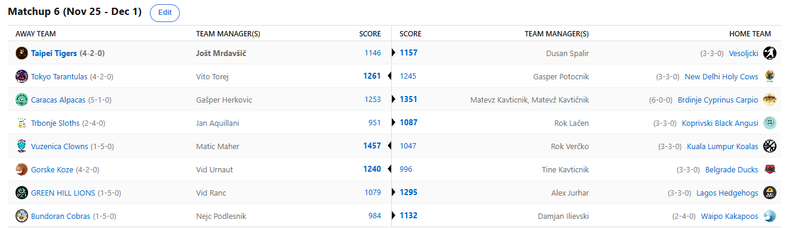

SEZONA 24/25
- Pravila in sistem tekmovanja
- Matchup1 (Oct 22 - Oct 27)
- Matchup2 (Oct 28 - Nov 3)
- Matchup3 (Nov 4 - Nov 10)
- Matchup4 (Nov 11 - Nov 17)
- Matchup5 (Nov 18 - Nov 24)
- Matchup6 (Nov 25 - Dec 1)
- Matchup7 (Dec 2 - Dec 8)
- Matchup8 (Dec 9 - Dec 15)
- Matchup9 (Dec 16 - Dec 22)
- Matchup10 (Dec 23 - Jan 29)
- Matchup11 (Dec 30 - Jan 5)
- Matchup12 (Jan 6 - Jan 12)
- Matchup13 (Jan 13 - Jan 19)
- Matchup14 (Jan 20 - Feb 26)
- Matchup15 (Jan 27 - Feb 2)
- Play-in (Feb 3 - Feb 23)
- Playoff 1 (Feb 24 - Mar 9)
- Playoff 2 (Mar 10 - Mar 23)
- Playoff 3 (Mar 24 - Apr 6)
2024/25 - Fantasy Koroška - sezona 8
MATCHUP 6 (Nov 25 - Dec 1)
Poročilo kroga
Na dan, ko je pred natanko 27 leti na svet v slogu Matevža, ko vidi da je ostal brez Finney-Smitha prijokal Gašper Herkovič,
si vzemimo čas za nov recap kroga. Na tej točki pa izrekamo še vse čestitke in vse najboljše našemu gospodarju Alpakalanda.
6 krogov in prav toliko zmag za prvo gofljo Brdinj. Krapi se še naprej uspešno izogibajo trnkom in še nikomur ni uspelo ujeti te izmuzljive ribe.
Tokrat so nastradale Alpaka in za rojstnodnevno darilo je Matevž podaril Gašperju zgolj en velik L in pa nekaj memov.
Očitno gresta pridobivanje free spinov takoj ko se usedeš za mašino in pa pridobivanje zmag na fantasyju z roko v roki ..
z njima pa Mato Burek Golf. Kdo ga bo kot prvi ustavil in postal heroj ljudstva?
Kot naslednji bo imel priložnost Jole. Upajmo, da ni vse sreče porabil na Cash Express Luxury Line in mu bo tokrat čuha-puha pripeljal zmago.
Zdaj bi jo že krvavo potreboval, po drugem, tesnem in bolečem zaporednem porazu. Skorajda je na krilih Wembyja uspel comeback v zadnjem dnevu,
a zmanjkalo je minut na zadnji tekmi in Špalir je odnesel zmago z zgolj 11 točkami razlike. Dušan, ki ga že od sobote baje pestijo nočne more
v katerih v glavni vlogi nastopa trener moštva Maribor Mladi je tako vendarle prejel eno bandažo za svoje rane.
Po tem ko je končno uspel sčistiti avtomobil, ki se je soočil z Matevževimi podvigi, se nam je oglasil Voky in njegov komentar je bil: »det moji angusi so jači ko pica v Mondu«.
Vsekakor ogromna pohvala za svoje varovance in očitno je Rok zadovoljen s potekom sezone. Je pa res, da hvaliti se po dvoboju s Kupsom je podobno,
kot da na 60m našprintaš polža in proslavljaš zmago. Baje do letos znanstveniki niso bili prepričani, ali hodijo Lenivci na zimsko spanje, so pa zato končno
dobili potrditev. Bo Poljski Rodman, ki je izgleda simuliral poškodbo, samo da se je rešil igranja v Bundoranu prebudil soigralce in bo Kups ponovno strah in trepet lige?
No dotaknimo se malo še Nejčevih varovancev … ampak ne premočno, da ne bo Embiid spet out za 14 dni. Očitno so še belouške prenevarna žival, da bi lahko bile maskota tega moštva.
ESPNovi algoritmi ocenjujejo možnosti za uvrstitev v končnico na zgolj 43%!! Šokantno in katastrofalno za aktualnega prvaka, ki bo očitno moral po tej sezoni
nazaj v razvojno ligo. Tokrat mu je štrene zmešal Damjan Ilievski, ki je s svojimi polsovamipolptiči prišel do druge zmage in se krepko odlepil od dna.
Zdaj je tudi Verčkov izgovor »da bo Ilja vsaj kaj zmago« postal brezpredmeten, kajti Kakapoji so začeli leteti visoko in svoje playoff možnosti dvignili na 74%.
Za vse nohte pogrist pa je bil tudi dvoboj med Tarantelami in Kravami. Prav do zadnjega napeto kot struna in zgolj 16 točk razlike. Tokrat je krajšo potegnil G€P$ in zabeležil
3. poraz ob prav toliko zmagah. Vseeno imamo ob pogledu na Svete Krave nekako občutek, da bi to lahko bila njihova sezona in bi po dolgih letih irelevantnosti v
fantasy smislu tokrat lahko posegel po visokih uvrstitvah. Kar pa se Vita tiče, lahko s svetle plati ugotovi vsaj, da ni bil tako nebogljen kot proti Olimpiji
in da se bliža novo leto … morda pa si Zion da zaobljubo o prepovedi hitre hrane in postane močan adut za tega rookija?
Nič kaj bolje ni šlo niti tretjemu rookiju, Vid Ranc je namreč zabeležil nov poraz in se s skromnih 1-5 nahaja na predzadnjem mestu. Čeprav bi širša publika zagotovo raje videla,
da natepe Lagoške Ježke, pa si je Vid ta teden izbral za stranko raje OK Maribor, kar pa tudi ni kar tako. Bo lahko tako clutch kot je v zaključkih
nizov tudi v zaključku sezone, da si pribori končnico? CEO OperiMe, Aleks Jurhar, se kot kaže vendarle vrača na zmagovita pota in se je z novo zmago povzpel na 7. mesto.
Kdo bi si mislil, da lahko kdorkoli s troglavim zmajem iz Washingtona prihaja redno do zmag?
Tretji izmed avspuharjev z manj kot 1000 točkami ta teden pa je po predictionih sodeč prvi favorit za gajbo konec sezone – Tine Kavtičnik.
Kar 9 managerjev meni, da bodo Račke letos na piknik pritovorile kazensko gajbo in kot kaže je njihov denar bil pametno vložen,
v Beogradu namreč že vlada panika in niti tamkajšnji prebivalci se ob teh slabih rezultatih več menda ne veselijo niti dočeka nove godine z Aco Lucasom.
Je pa na drugi strani očitno željan in lačen zmag Vid Urnaut, ki kljub dobrim rezultatom išče izboljšave za svoje Koze.
Tokrat je v svoje moštvo zvabil dahača Ingrama in očitno upa, da bo njegova desna mišica zdržala napore. Na tej točki zahvala s strani Tigrov,
ki so tega treša odvzeli z naših pleč in njegove zaspane glave zdaj manager Jole ne rabi več gledat na IR-ju.
Norih gob pa se je najedel očitno Matic Maher in uprizoril nor teden, v katerem mu je zgolj 13 točk zmanjkalo do najboljšega scora letos in virtualnega vodstva za denarno nagrado.
Ironično, da si je našega barberja oprtal človek, ki ob svoji kilometrski bradi najbrž sploh ne ve kaj barberji počnejo, ampak Matica to verjetno ne bo motilo
kaj preveč… Na nuli je baje pijača in čeprav ostaja v nevarnosti za gajbo, bo prvo zmago sprejel odprtih rok. One week wonder, ali pa so Klovni prestavili v
višjo prestavo? Na drugi strani Koale sploh nimajo v prestavi, v nuli drvijo po lestvici navzdol. Očitno se jim mudi nazaj v znan teritorij?
Ima Rok kakšnega asa v rokavu, zdaj ko mu tako rekoč manjka le še en relevanten igralec je čas, da pokaže svojo pravo moč, preden se ponovno izgubi v povprečju.
Kaj prinaša 7. teden? Dva velika derbija, na eni strani se bosta v izjemno pomembnem matchupu dna lestvice pomerila Ranac in Cicko,
na drugi strani pa Jole na krilih 99,9 periodično procentov svetovne populacije poskuša utišati Matona. Srečno vsem in ne pozabite na predictionih staviti na Kavta,
da poberem js več točk ko ga prefukam.